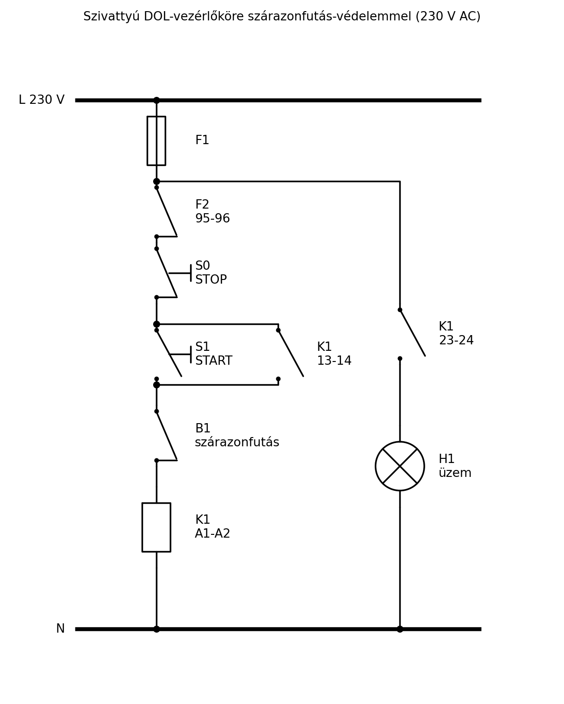
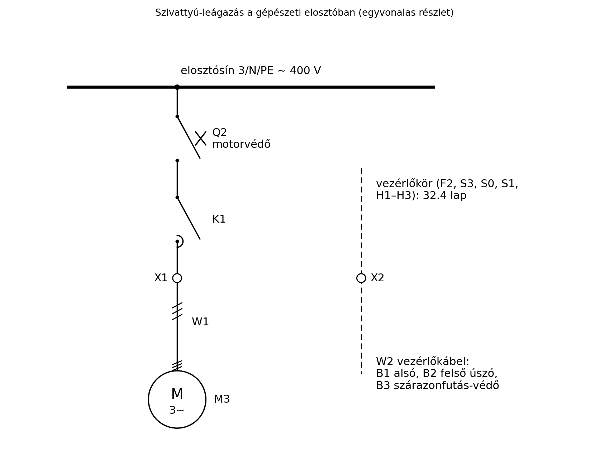
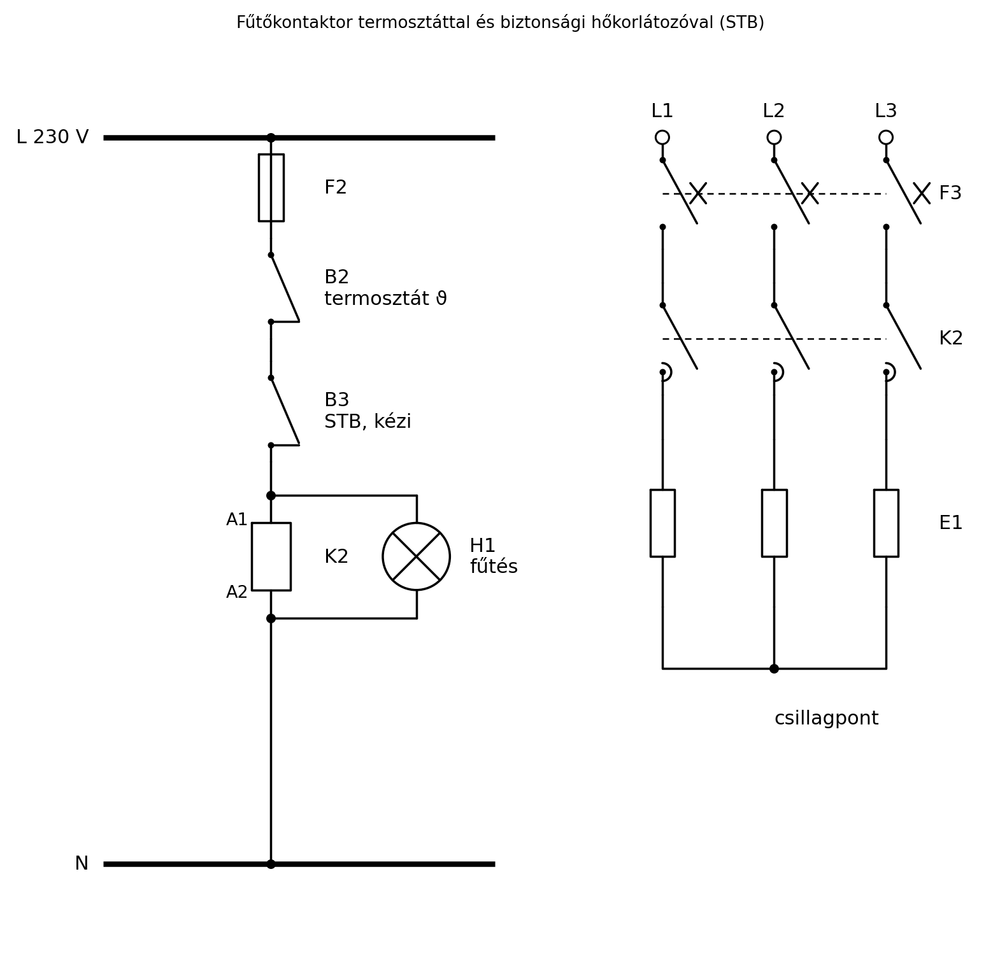
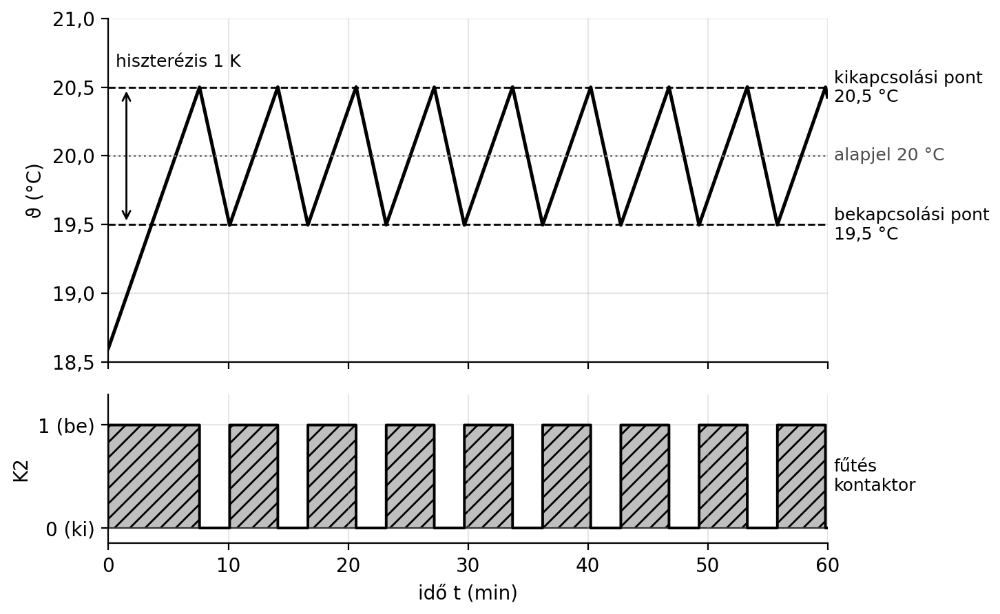
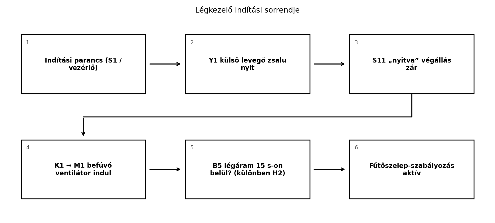

![Gépészeti elosztó egyvonalas rajza - Betáplálás (X0, 3/N/PE 400 V) → Q0 4P főkapcsoló → gyűjtősín L1 L2 L3 N PE. A gyűjtősínről: F0 túlfeszültség-levezető (SPD 2. típus) a PE felé; A0 hálózatfigyelő relé (fázishiány, fázissorrend), jelzése szaggatott vonallal a vezérlőre. Leágazások: (1) Q1 → U1 frekvenciaváltó → M1 befúvó ventilátor árnyékolt kábellel (szaggatott); (2) Q2 → A2 lágyindító → M2 keringtető szivattyú; (3) Q3 motorvédő → K3 kontaktor → M3 hidrofor szivattyú (direkt indítás); (4) F4 → T4 24 V DC tápegység → A1 PLC/HVAC-vezérlő; (5) F5 → T5 24 V AC a zsalumozgatóknak és a fagyvédőnek. A tűzjelző központ potenciálmentes kontaktusa szaggatott jelvonallal a vezérlőre (és a 35.2 reteszlánca szerint huzalozottan a kontaktorágakba). Vonások: vezetőszám.](assets/ve128-diagram-1.png)
Egy ipari épületben a villanyszerelő gyakran úgy találkozik a gépészettel, hogy leraknak elé egy cső- és műszerezési tervet (P&ID), egy fogyasztói listát, és azt mondják: „ezt hozd össze egy kapcsolószekrényben”. A szellőztető ventilátor nem indulhat el, ha a fagyvédő termosztát hibát jelez. A fűtési keringtető szivattyúnak le kell állnia, ha a tűzjelző tüzet észlel. A hűtőkompresszornak nem szabad azonnal visszaindulnia egy áramszünet után, mert a hűtőkörben kiegyenlítődött a nyomás. Ha ezeket az összefüggéseket nem érted, hiába kötöd be szabályosan a mágneskapcsolót, a rendszer mégis tönkremegy, vagy egy tűz esetén életveszélyt okoz.
Ebben az alfejezetben a légtechnikai (HVAC), vízgépészeti és hőtechnikai berendezések elosztóinak felépítését, a tipikus ventilátor- és szivattyúvezérléseket, valamint a gépész és villamos szakma határfelületét tanulod meg. Ez azért kritikus, mert a Felvonó- és állandó üzemű fogyasztók elosztói alfejezetben az itt tanult reteszelési és határfelületi logikát fogod továbbvinni bonyolultabb rendszerekre.
Mielőtt a részletekbe mennénk, nézzük meg egy tipikus gépészeti elosztó egyvonalas rajzát: milyen leágazások indulnak a gyűjtősínről, és mi védi őket.
Ábraértelmezés. Olvasd végig a rajzot balról jobbra: a betáplálás a Q0 négypólusú főkapcsolón át a gyűjtősínre jut; ide csatlakozik az F0 túlfeszültség-levezető és az A0 hálózatfigyelő relé, amely fázishiánynál vagy rossz fázissorrendnél letiltja a hajtásokat. Minden fogyasztó saját védelmet kap: a ventilátor (M1) frekvenciaváltóval, árnyékolt motorkábellel, a keringtető szivattyú (M2) lágyindítóval, a hidrofor (M3) motorvédő kapcsolóval és kontaktorral indul; a vezérlés (A1) saját F4 védelmű 24 V DC tápot, a zsalumozgatók és a fagyvédő F5 védelmű 24 V AC tápot kapnak. A rajzból közvetlenül kiolvasható az anyaglista (Q0, F0, A0, Q1–Q3, U1, A2, K3, F4/F5, T4/T5) és a bekötési sorrend. A vezérlési szint felülírja a hajtásokat: a PLC vagy a huzalozott retesz letilthat egy kontaktort, ha a tűzjelző jelez, a tűzgátló csappantyú nem nyitott ki, vagy ha a hőmérséklet túl alacsony (lásd lent a légkezelő reteszláncát).
A gépészeti elosztóban a leggyakoribb fogyasztók a ventilátorok és a szivattyúk. A villamos szerelő szempontjából ezek általában háromfázisú aszinkronmotorok, ezért a bekötésüknél a Motorvédelmek, lágyindítók és frekvenciaváltók az elosztóban alfejezetben tanult elveket alkalmazzuk, de itt a folyamat oldaláról is megvizsgáljuk őket.
A ventilátorokat elsősorban a frekvenciaváltó (VFD) vagy a lágyindító használata jellemzi, különösen a nagyobb teljesítményű, nagy tehetetlenségi nyomatékú, szíjhajtásos vagy közvetlen hajtású axiál- és radiálventilátoroknál. Miért?
Szabály. Ventilátoroknál a VFD-t jellemzően négyzetes (változó nyomatékú) U/f jelleggörbére vagy energiaoptimalizáló módra paraméterezzük, mert a terhelőnyomaték a fordulatszám négyzetével nő (ellenőrizendő: gyártói kézikönyv). Az alsó frekvenciahatárt (pl. 20–25 Hz) a minimális légmennyiség, a hővisszanyerő/fűtőregiszter védelme és a mechanikai rezonanciák határozzák meg; a felső határ jellemzően 50 Hz. A frekvenciaváltó kimenetén mágneskapcsolót csak akkor szabad alkalmazni, ha a gyártó megengedi, és a vezérlés biztosítja, hogy csak letiltott (nem moduláló) kimenetnél kapcsoljon; az üzem közbeni, terhelt bontás a kimenő tranzisztorok meghibásodását okozhatja (ellenőrizendő: gyártói kézikönyv).
A vízgépészeti szivattyúknál a legnagyobb gondot a vízlökés (nyomáslökés) okozza. Ha egy szivattyút direkt indítással kapcsolsz be, a csőhálózatban hirtelen nyomásugrás keletkezik, ami kalapácsütésként hangzik és tönkreteheti a csőbilincseket, szelepeket, sőt a szivattyú tömítéseit is. Még súlyosabb a hirtelen leállítás, amikor a megálló vízoszlop visszacsapja a visszacsapó szelepet (vízütés). Ezért a lágyindítót vagy a frekvenciaváltót szivattyúnál lassú indításra és szabályozott, lassú leállításra (soft stop) paraméterezzük.
Szabály. A nagyobb (1,5–2 kW feletti) szivattyúknál lágyindítót vagy frekvenciaváltót célszerű használni a nyomáslökés elkerülése érdekében. A lágyindító feszültség- vagy nyomatékvezérléssel fokozatosan gyorsítja fel a motort. A frekvenciaváltóval emellett a szivattyú fordulatszámát a nyomás vagy a térfogatáram függvényében szabályozhatjuk.
Tipikus szerelői hiba: A motorvédő kapcsolót a szivattyú tényleges áramfelvételének „ráhagyással” a névleges áram fölé állítják. Helyes: a beállítás a motor adattábláján szereplő névleges áram (szervizfaktorral rendelkező motornál a gyártó szerint – ellenőrizendő: adatlap). Ha az üzemi áram tartósan a névleges fölött van, a munkapontot (szelepállás, szűrő, járókerék) kell vizsgálni, nem a védelmet feljebb állítani; a névleges fölé állítva a motor tartós túlterhelés ellen nem védett.
Kapcsolási rajz. Az alábbi rajz egy szivattyú direkt (DOL) indításának vezérlőkörét mutatja szárazonfutás-védelemmel. A K1 13-14 önfenntartó érintkező a START gombbal (S1) párhuzamos, így a STOP (S0), a hőkioldó (F2 95-96) vagy a szárazonfutás-védő (B1) nyitása a tekercset elejti, és a motor leáll.

Az úszókapcsolós, KÉZI–0–AUTO választókapcsolós ürítőszivattyú teljes fő- és vezérlőköri lapját (Q1, Q2, K1, F2, S3 KÉZI–0–AUTO, S0, S1, B1 alsó és B2 felső úszó, B3 szárazonfutás-védő, H1 ÜZEM, H2 ZAVAR, H3 AUTO) a Kétsebességű, sorrendi és késleltetett vezérlések alfejezet (32.4) szivattyú-tervlapja mutatja (a lapon a szivattyúmotor jele M3). A két úszókapcsolós vezérlés logikai levezetése esettanulmányként: Logikai kapuk, számrendszerek és a relé helyett logika. A gépészeti elosztóban ebből a leágazás és a kezelőszervek látszanak:

| Szárazonfutás-védelem | Működési elv | Mikor válaszd? | Korlát |
|---|---|---|---|
| minimumúszó (B3) | a vízszint az úszó alá süllyed → bontó nyit | akna, tartály, szennyezett víz is | mechanikus, elakadhat; rendszeresen próbálni kell |
| elektródás szintrelé | a víz vezetőképességét érzékeli két elektróda között | tiszta, vezető víz, kút, tartály | olaj, desztillált víz, lerakódás mellett téved |
| áramfigyelő (cos φ / áram) relé | a szárazon futó szivattyú áramfelvétele leesik | mélykúti szivattyú, ahol nincs hely érzékelőnek | beállítást igényel a tényleges üzemi áramhoz (ellenőrizendő: gyártói adat) |
Ellenőrzés átadáskor (feszültségmentes bekötés után, a jogosult visszakapcsolását követően): (1) KÉZI állásban START/STOP, a forgásirány; (2) AUTO állásban az úszók kézi emelésével a bekapcsolási (B2 felső) és kikapcsolási (B1 alsó) szint, a hiszterézis; (3) a B3 működtetése KÉZI és AUTO állásban is leállít, és a H2 világít; (4) a Q2 TEST gombjával a hibajelzés és a BMS-hibajel; (5) a Q2 beállítása a motor adattábláján szereplő névleges áramra.
Fűtési keringtető- és aknaszivattyú-rendszerekben gyakran két azonos szivattyú van beépítve: egy üzemi és egy tartalék. A vezérlés váltakozó üzemben járatja őket: minden indításkor a másik szivattyú indul, így a kopás egyenletes, és a tartalék sem „rozsdásodik be” állás közben. Ha a kiválasztott szivattyú motorvédője kiold, a vezérlés automatikusan a másikat indítja (hibaátkapcsolás), és jelzi, hogy a rendszer tartalékban üzemel. Az alábbi relés megvalósításban kövesd végig, mi történik, ha a K3 M1-et választja, de a Q1 kioldott!
![Ikerszivattyú váltakozó üzeme és hibaátkapcsolása – vezérlőkör - Alapállapot. Igény (B1, pl. nyomás- vagy hőmérséklet-igény) → K3 impulzusrelé: minden indításkor átvált (egyszerűsítve; a rövid vezérlőimpulzust a vezérlő adja). K3 váltóérintkező: bontó ág → K1 (M1), záró ág → K2 (M2). Hibaátkapcsolás: Q2 97-98 (Q2 kioldva → zár) párhuzamos a K3 bontó ágával, Q1 97-98 a záró ágával. Engedély: Q1 13-14, Q2 13-14 (bekapcsolt, nem kioldott motorvédőnél zárt). Kölcsönös retesz: K2 21-22 a K1 ágában, K1 21-22 a K2 ágában. H1/H2 üzemjelző (M1, M2), H3 „hiba, tartalék üzemben” a kioldásjelző második segédérintkezőin. Kapocsszámok gyártófüggők (ellenőrizendő). Főkör egyvonalasan: Q1–K1–M1, Q2–K2–M2.](assets/ve128-diagram-4.png)
Hogyan működik? Ha az igény (B1) megjelenik, a K3 átvált, és a választott ágban – ha a hozzá tartozó motorvédő be van kapcsolva (13–14 zárt) és a másik kontaktor nem húzott be (21–22 zárt) – a kontaktor behúz. Ha a választott szivattyú motorvédője kioldott, a saját 13–14 érintkezője bont, a 97–98 pedig a másik ág engedélyét adja meg a K3 helyzetétől függetlenül: a tartalék indul, és a H3 világít. A kölcsönös retesz (K1/K2 21–22) biztosítja, hogy a két szivattyú egyszerre ne járjon, ha a hidraulika így kívánja (párhuzamos csúcsüzemnél ezt a retesz helyett a vezérlő oldja meg). PLC-s megvalósításnál ugyanez a logika programban fut, de a motorvédők jelzései ugyanígy bemenetek.
Feladat (C). Üzem közben az M1 Q1 motorvédője kiold. Mit jelez a tábla, melyik szivattyú jár, és mi a teendő?
Megoldás. A Q1 13–14 bont, a K1 elenged, a H1 kialszik; a Q1 97–98 zár, ezért a K2 ága kap engedélyt (a K1 21–22 már zárt), a K2 behúz, az M2 jár, a H2 és a H3 („hiba, tartalék üzemben”) világít. Teendő: a rendszer üzemel, de tartalék nélkül – a hibát mielőbb ki kell vizsgálni (feszültségmentesítés után a motor szigetelése, tekercsellenállása, a szivattyú szorulása, a Q1 beállítása az adattábla szerint), és csak az ok megszüntetése után szabad a Q1-et visszakapcsolni.
A gépészeti elosztóban találkozol a legegyszerűbb, termosztátos szabályozással, de a modern rendszereknél PLC vagy dedikált HVAC vezérlő dolgozik. A szerelő feladata az érzékelők és a beavatkozók (szelepmozgatók) bekötése és a jelzéslánc ellenőrzése.
A legegyszerűbb és leggyakoribb szabályozás a kétpontos (be–ki) szabályozás: egy érzékelő érintkezője közvetlenül a kontaktor tekercsét kapcsolja. Az érzékelőnek két kapcsolási pontja van: a bekapcsolási és a kikapcsolási pont; a kettő különbsége a kapcsolási különbség (hiszterézis). Hiszterézis nélkül az érintkező az alapjel körül másodpercenként „rezegne”, a kontaktor és a motor (vagy fűtőelem) gyorsan tönkremenne.
Nyomáskapcsolós (hidrofor) szivattyú. A hidrofor tartály nyomását a B1 nyomáskapcsoló figyeli: a bontóérintkezője zárt, amíg a nyomás a kikapcsolási pont alatt van, és a kikapcsolási nyomáson nyit; a nyomás csökkenésekor a bekapcsolási ponton újra zár. Szemléltető értékek: bekapcsolás 2,5 bar, kikapcsolás 4 bar (a valós értéket a gépész adja meg). Az alábbi rajzon a vezérlőkör (bal) és a főkör egyvonalasan (jobb) látható; a DOL-vezérlés részleteit (önfenntartás, szárazonfutás-védelem, üzemjelzés) a fenti, „Szivattyúk indítása és védelme” alatti rajz, a motorvédelmet a Motorvédelmek, lágyindítók és frekvenciaváltók az elosztóban alfejezet mutatja.
![Hidrofor szivattyú kétpontos (nyomáskapcsolós) vezérlése - Vezérlőkör alapállapotban (nyomás alatti tartály, S2 „0” állásban): L → F1 vezérlőköri biztosító → Q1 13-14 (a motorvédő segédérintkezője: bekapcsolt, nem kioldott Q1-nél zárt) → S2 KÉZI–0–AUTO választó. AUTO állásban: B1 nyomáskapcsoló (bontó; a kikapcsolási nyomáson nyit) → K1 A1-A2 → N. KÉZI állásban B1 nélkül (csak felügyelet mellett, szárazonfutás-veszély!). Főkör egyvonalasan: L1 L2 L3 → Q1 motorvédő → K1 főérintkezők → M1. Egyszerűsített rajz: a szárazonfutás-védelem és az üzemjelző a fenti DOL-rajz szerint kiegészítendő.](assets/ve128-diagram-5.png)
Termosztátos fűtés biztonsági hőkorlátozóval. Egy elektromos fűtőregiszter vagy villamos kazán háromfázisú, csillagba kötött E1 fűtőellenállását a K2 kontaktor kapcsolja. A tekercs ágában két, egymástól független bontóérintkező van sorban: a B2 termosztát a szabályozó (melegedéskor a kikapcsolási ponton nyit, hűléskor magától visszazár), a B3 biztonsági hőkorlátozó (STB) a védelem: csak akkor nyit, ha a termosztát vagy a kontaktor hibája miatt a hőmérséklet a megengedett határ fölé szalad, és nem áll vissza magától – a hiba okát meg kell keresni, és kézzel kell visszaállítani.

A szabályozás időbeli lefutását az alábbi idődiagram mutatja (alapjel 20 °C, hiszterézis 1 K): a fűtés 19,5 °C-on bekapcsol, 20,5 °C-on kikapcsol, a hőmérséklet a két pont között „fűrészfogban” ingadozik.

Olvasd le az ábráról: mennyi ideig fűt a K2 egy ciklusban, és mennyi ideig áll? (Szemléltető modell: felfűtés 0,25 K/min, hűlés 0,4 K/min → 4 min fűtés, 2,5 min szünet, 6,5 min-es ciklus.) A hiszterézis tehát a kapcsolási gyakoriságot állítja be: kisebb hiszterézis pontosabb hőmérsékletet, de több kapcsolást (nagyobb kontaktorkopást, motoros szivattyúnál több indítást) jelent; a hidrofornál a túl kicsi be–ki nyomáskülönbség (vagy a tartály elvesztett előnyomása) óránként sok indítást, a motor melegedését okozza.
Feladat (B). A termosztát hiszterézisét 1 K-ről 0,5 K-re csökkentjük, a hőveszteség és a fűtőteljesítmény változatlan. Mi történik a kapcsolások számával?
Megoldás. Azonos felfűtési és hűlési sebességnél a ciklusidő a hiszterézissel arányos (; 1 K-nél 6,5 min, 0,5 K-nél 3,25 min), ezért a kapcsolási szám kb. kétszeresére nő (a szkript 600 perces szimulációjában 91 helyett 181 bekapcsolás). A hőmérséklet ingadozása viszont feleakkora lesz.
A víz- és levegőhőmérséklet mérésére a leggyakoribb típusok:
Szabály. A 0–10 V-os és 4–20 mA-es jeleknél mindig árnyékolt, sodrott érpárú kábelt használj. Az árnyékolást csak az egyik oldalon, általában a vezérlőszekrényben kösd a PE-re vagy a jel-földre. Az érzékelők kábelét soha ne vezesd a motorokhoz menő, nagy zavartartalmú kábelekkel közös csatornában vagy kötegben. A kétvezetékes távadó 4–20 mA-es áramhurkának rajza és mérése: Erősítők, műveleti erősítő és szűrők.
A fűtési és hűtési körökben a hőcserélőkön, fűtőregisztereken, hűtőgerendákon átáramló víz mennyiségét motoros szabályozószelepek (két- vagy háromjáratú) szabályozzák. Két nagyon elterjedt típus:
Bekötési rajzok. Az alábbi rajz a két szeleptípus és a 3 vezetékes Pt100 bekötését mutatja egymás mellett. Hasonlítsd össze a kapcsok számát és szerepét!
![(a) hárompontos szelepmozgató · (b) 0–10 V-os szelepmozgató · (c) 3 vezetékes Pt100 - (a) Y1 hárompontos mozgató: 1 = közös (⊥), 2 = nyit, 3 = zár; a DO1 (K21) és DO2 (K22) relé záróérintkezője a másik relé bontóérintkezőjén át kapcsol, így a „nyit” és „zár” kapocs egyszerre nem kaphat feszültséget (retesz). (b) Y2 0–10 V-os mozgató: 1 = 24 V~, 2 = ⊥ (közös a szabályozóval), 3 = Y vezérlőjel a szabályozó AO kimenetéről, 5 = U visszajelzés 2–10 V az AI bemenetre. (c) Pt100 3 vezetékkel: R_v1, R_v2, R_v3 a kábelerek ellenállása. A kapocsszámok gyártófüggők (ellenőrizendő: gyártói adatlap).](assets/ve128-diagram-7.png)
A rajzon a 3 vezetékes Pt100 lényege látszik: a mérőbemenet az 1–2 hurokban az , a 2–3 hurokban az ellenállást méri, és a kettő különbségét veszi – ha a három ér egyforma (), a vezetékellenállás kiesik, így a feladatgyűjteménybeli (35.2) példa 3,5 Ω-os (≈ 9 °C-os) hibája közel nullára csökken. (A 4 vezetékes kötés az érellenállások egyenlőségét sem igényli.) Kérdés: miért nem szabad a 3 vezetékes kötésnél az egyik eret toldással, más keresztmetszettel pótolni?
A motivációban említett összefüggést („a szellőztető ventilátor nem indulhat el, ha a fagyvédő termosztát hibát jelez”) most egy egyszerű légkezelőn bontjuk ki. Először a működési sorrendet nézd meg:

A sorrend relés megvalósítása az alábbi 24 V AC-os vezérlőkör. Kövesd végig: mi történik, ha a B4 fagyvédő vagy a K20 tűzjelző relé bont?
![Légkezelő reteszlánca – relés vezérlőkör (24 V AC) - K10 „rendszer üzem” segédrelé: S0 STOP (bontó), S1 START (záró), öntartás K10 13-14. A K10 23-24 után sorosan a biztonsági reteszek: B4 fagyvédő termosztát (bontó, fagyveszélykor nyit) és K20 tűzjelző-relé (bontó, a tűzjelző központ potenciálmentes kontaktusa vezérli). Utánuk két ág: Y1 zsalumozgató (rugóvisszatérítéses: feszültség nélkül zár) és a K1 ventilátor-kontaktor (vagy a FV RUN-bemenete) S11 zsalu-végállás (záró, „nyitva”-nál zár) és F2 95-96 hőkioldó után. K11 bekapcsolás-késleltetett időrelé (15 s) a K1 13-14-en át; ha 15 s után a B5 légáramkapcsoló (bontó: légáram nélkül zárt) még zárt, H2 „légáramhiba” világít. Elvi rajz.](assets/ve128-diagram-9.png)
A fagyvédelem és a tűzjel tehát huzalozottan bont: a K10 23-24 utáni B4 vagy K20 megszakítja a zsalumozgató és a ventilátor-kontaktor ágát is, függetlenül attól, mit „gondol” a vezérlő. A fűtőszelep 100 %-os nyitását és a szivattyú járatását fagyvédelemkor a B4 második (váltó) érintkezője vagy a vezérlő végzi; valós rendszerben a sorrendet PLC/HVAC-vezérlő adja, de a biztonsági reteszek huzalozottan is bontanak (ellenőrizendő: tervezői előírás).
| Esemény | Külső levegő zsalu (Y1) | Befúvó ventilátor (M1) | Fűtőszelep | Fűtési szivattyú |
|---|---|---|---|---|
| Normál indítás | nyit | indul a „nyitva” végállás (S11) után | szabályoz (B5 visszajelzés után) | jár |
| Fagyveszély (B4 bont) | zár (rugó) | leáll | 100 % nyit | jár |
| Tűzjel (K20 bont) | zár (rugó) | leáll | a tűzvédelmi terv szerint (jellemzően szabályozás le) | a tűzvédelmi terv szerint |
| Áramszünet | zár (rugó) | leáll | a mozgató biztonsági helyzetébe áll (típusfüggő) | áll |
Figyelem. Ez a rész a gépészeti elosztó egyik legbiztonságkritikusabb területe. A pontos kialakítást a tűzvédelmi terv és a hatályos tűzvédelmi szabályok (OTSZ) határozzák meg. (ellenőrizendő: aktuális OTSZ előírások)
A szellőzőrendszerben a tűzgátló csappantyú akadályozza meg, hogy a füst és a tűz átterjedjen a csatornákon. A szerelő feladata:
Szabály. A tűzgátló csappantyúk vezérlőkábelének típusát (például funkciótartó kivitel) a tűzvédelmi terv és a rendszer határozza meg; füstelvezető/füstvédelmi csappantyúknál gyakori a funkciótartó kábel. A kábeltípus egy adott célra való megfelelősége a gyártói tanúsítványból és a tűzvédelmi tervezői kiírásból következik. (ellenőrizendő: érvényes kábeltanúsítvány)
Figyelem. A tűzgátló csappantyú motorjának kábelét TILOS erősáramú vezetékkel közös védőcsőben, kábelcsatornában vezetni.
A füstelvezető ventilátor feladata, hogy tűz esetén a füstöt és a hőt eltávolítsa. A specifikációja szigorúbb, mint egy normál légtechnikai ventilátoré:
Figyelem. Biztonsági berendezés áramkörében az áram-védőkapcsoló (FI-relé) alkalmazását a vonatkozó előírás korlátozhatja, mert a téves kioldás tűz alatt a funkció kiesését jelentené; az áramkör kialakítását a tűzvédelmi terv határozza meg. (ellenőrizendő: MSZ HD 60364-5-56, tűzvédelmi terv)
Kényszerindítás kapcsolásban. Ha a füstelvezető ventilátort egy közönséges DOL-kör mintájára kötnéd be, a hőkioldó 95–96 bontóérintkezője tűz alatt is leállíthatná a motort – éppen akkor, amikor a legnagyobb szükség van rá. Az alábbi elvi rajz azt mutatja, hogyan kerüli meg a tűzjel ága a STOP gombot és a hőkioldót. Keresd meg a rajzon, hová kötötték a hőkioldó 97–98 záróérintkezőjét!
![Füstelvezető ventilátor kényszerindítása – elvi vezérlőkör - Elvi példa; a tényleges kialakítást a tűzvédelmi terv írja elő (ellenőrizendő: OTSZ, TvMI, MSZ HD 60364-5-56). Normál ág: S0 STOP (bontó) → S1 START (záró) ∥ K1 13-14 öntartás → F2 95-96 hőkioldó (bontó) → K1 A1-A2. Tűz ág: K20 tűzjelző-relé záróérintkezője (vagy a központ potenciálmentes kontaktusa) közvetlenül a K1 tekercsére, így megkerüli az S0-t és az F2 95-96-ot. F2 97-98 → H2 „túlterhelés”: tűz alatt csak jelez. Főkör egyvonalasan: Q1 zárlatvédelem (megmarad, szelektíven méretezve) → K1 → F2 hőkioldó → M1, funkciótartó kábellel.](assets/ve128-diagram-10.png)
A rajzból ez olvasható ki: tűzjelkor a K20 zár, és a K1 tekercse az S0 és a 95–96 megkerülésével kap feszültséget; a hőkioldó ilyenkor csak a 97–98-on át a H2 lámpát gyújtja. Ez azért fogadható el, mert tűz esetén a füstmentes menekülőút és a beavatkozás fontosabb, mint a motor élettartama: a motort „feláldozzuk”, de a zárlatvédelem (Q1) megmarad, mert zárlatnál a motor már úgysem működik, és a kábel tüzet okozhatna. A kézi STOP tűz alatt nem állítja le a ventilátort; a tűzoltók által kezelt tűzoltói kapcsoló vagy kezelőtábla kivétel lehet (ellenőrizendő: tűzvédelmi terv, TvMI). A tápkábel funkciótartó, a FI-relé alkalmazását pedig a fenti figyelmeztetés szerint a tűzvédelmi terv dönti el.
A legtöbb gyakorlati hiba itt keletkezik. A gépész tervadatokból, a villanyszerelő rajzokból dolgozik, és ami a kettő között nincs egyértelműen definiálva, az a szerelés során derül ki – rossz esetben rosszul.
Mi tartozik a gépészhez?
Mi tartozik a villanyszerelőhöz?
Szabály (határfelület). A gépész–villamos találkozási pontot mindig kapocslistával kell rögzíteni. A szerelés során az I/O-listát (Input/Output lista) használjuk. Ez tartalmazza:
Gyakorlati tipp: A kivitelezés megkezdése előtt mindig egyeztessük a gépész kollégával, hogy melyik érzékelőt ki szerel be, és hol van a határ. Pl. ha a gépész viszi a csőbe a hőmérő zsebet, akkor a villanyszerelő csak a betétet teszi bele.
Szabvány. A gépészeti elosztók kialakításánál is az MSZ EN 61439 szabványsorozatot kell alkalmazni a kapcsolóberendezésre. A berendezés belső huzalozására és védelmére a gépekre vonatkozó MSZ EN 60204-1 szabvány nyújt iránymutatást, még akkor is, ha nem fémmegmunkáló gépről van szó, mert a vezérlési logika és a védelmek hasonlóak. A tűzvédelmi elemekre a tűzvédelmi műszaki irányelvek és a forgalmazói megfelelőségi nyilatkozatok érvényesek. A folyamat oldaláról a gépész a P&ID-t adja, a villamos szerelő a villamos dokumentációt (kapcsolási rajz, I/O-lista). (ellenőrizendő: a konkrét MSZ EN 60204-1 és MSZ EN 61439 kiadása)
Megjegyzés. Az alfejezetben található 400 °C / 2 h érték a füstelvezető ventilátor hőállósági osztályára vonatkozik (pl. F400/120 – ellenőrizendő: MSZ EN 12101-3, MSZ EN 13501-4); ettől független a tápkábel funkciótartási ideje, amelyet a hazai gyakorlatban E30/E60/E90 (30/60/90 perc) jelöl (ellenőrizendő: OTSZ/TvMI, kábeltanúsítvány). Ez az érték és a frekvenciaváltó kimenetére vonatkozó tiltások tájékoztató jellegűek, a gyakorlatban a gyártói adatlap és a helyi tűzvédelmi tervező előírása a mérvadó.
Valós eset. Egy irodaház nyáron jelentette, hogy a klíma nem hűt eléggé, és a szellőzőgépházban furcsa búgás hallatszik. A karbantartó megmérte a ventilátor motorját: a motorvédő kapcsoló nem oldott le, de a frekvenciaváltó hibaüzenetet jelzett („OL1” – túláram). Az áramfelvétel a névleges 14 A helyett 18 A volt.
A hiba oka nem a villanyszerelőben volt, hanem a gépészben: a karbantartás után a légszűrő-betétet nem tették vissza, és a revíziós ajtó nyitva maradt: a rendszer ellenállása lecsökkent, ezért a ventilátor nagyobb térfogatáramon, nagyobb tengelyteljesítménnyel járt, és a motor nagyobb áramot vett fel (radiálventilátornál a teljesítményfelvétel a térfogatárammal nő; az eltömődött szűrő éppen csökkentené az áramot) (ellenőrizendő: ventilátor-jelleggörbe).
A tanulság: A gépészeti elosztóban a villamos védelem nemcsak a zárlat ellen véd, hanem a gépészeti hibák következményeit is el kell tűrnie vagy le kell kezelnie. Ilyenkor a frekvenciaváltó megfelelő beállítása (áramkorlátozás, fordulatszám-csökkentés) vagy a motorvédő kapcsoló helyes kalibrálása védte meg a motort a leégéstől.
A 0–10 V-os érzékelőt 230 V-os jellel közösvezetéken viszik. Miért rossz? A törpefeszültségű analóg jelre a 230 V-os vezeték kapacitív vagy induktív csatoláson keresztül zavart visz. A hőmérsékletérték ugrál, a rendszer rezegni kezd (a szelep folyamatosan nyit-zár). Helyes gyakorlat: Erősáramú és gyengeáramú jel csak szeparált csatornában vagy árnyékolt kábellel mehet.
A frekvenciaváltó és a motor közé kontaktort kötnek a motor leválasztására, és azt használják vészleállítónak. Miért rossz? A VFD kimenetének terhelt megszakítása túlfeszültséget indukál, ami tönkreteheti a tranzisztorokat. Helyes gyakorlat: A vészleállítás a VFD biztonsági bemenetét (STO – Safe Torque Off) aktiválja, vagy a bemeneti kontaktort oldja le, de a kimenetet nem terhelten szakítja meg.
Nem kötik be a tűzgátló csappantyú végállás-jelzőjét. Miért rossz? A tűzjelző központ nem tudja, hogy a csappantyú beszorult-e. Egy tűz esetén a rendszer azt hiszi, hogy a csappantyú zárva van, de a füst akadálytalanul terjed. Helyes gyakorlat: Az állásjelző kontaktusokat mindig sorba kell kötni a szellőztető vezérlésében és a tűzjelzőben.
Gyakorlás: ennek az alfejezetnek a kidolgozott példái, gyakorlatai és megoldással ellátott feladatai az Összefoglaló feladatgyűjtemény villanyszerelő tanulóknak című kötet 35.2 szakaszában találhatók.
A gépészeti elosztó a ventilátorok, szivattyúk, fűtési és hűtési körök villamos háttere. A ventilátoroknál a frekvenciaváltó az energiahatékonyság miatt kulcsfontosságú, a teljesítmény a fordulatszám köbével arányos . A szivattyúknál a lágyindító a vízlökés ellen véd. A fűtés/hűtés szabályozásban az érzékelők (0–10 V, 4–20 mA, Pt100) bekötésénél az árnyékolásra kell ügyelni, a szelepmozgatók lehetnek 3-pontos vagy 0–10 V-os vezérlésűek. A tűzgátló csappantyúk és a füstelvezető ventilátor vezérlése biztonsági kritikus: a kábelnek funkciótartónak kell lennie, a vezérlést a tűzjelző központtal kell összekapcsolni. A gépész-villamos határfelületet mindig I/O-listával és kapocslistával rögzíteni kell. Továbbvitt eredmény. Az itt tanult blokkvázlat, a reteszelési logika és a gépész-villamos interfész az alapja a Felvonó- és állandó üzemű fogyasztók elosztói alfejezetben tárgyalt bonyolultabb tokozásoknak és biztonsági köröknek.
A fejezet az MSZ EN 61439 sorozatra, az MSZ EN 60204-1 szabványra, az MSZ HD 60364-5-56 szabványra (biztonsági célú berendezések), az OTSZ-re (54/2014. BM rendelet) és a vonatkozó TvMI-kre, az MSZ EN 13501-3/-4 szabványokra (funkciótartás, füstelvezető ventilátor), valamint a gyártói kézikönyvekre támaszkodik; mindegyik: (ellenőrizendő: aktuális kiadás, hatályos szöveg). A példaértékek oktatási célúak, a gyakorlatban a gyártói adatlap és a tűzvédelmi tervező előírása a mérvadó.